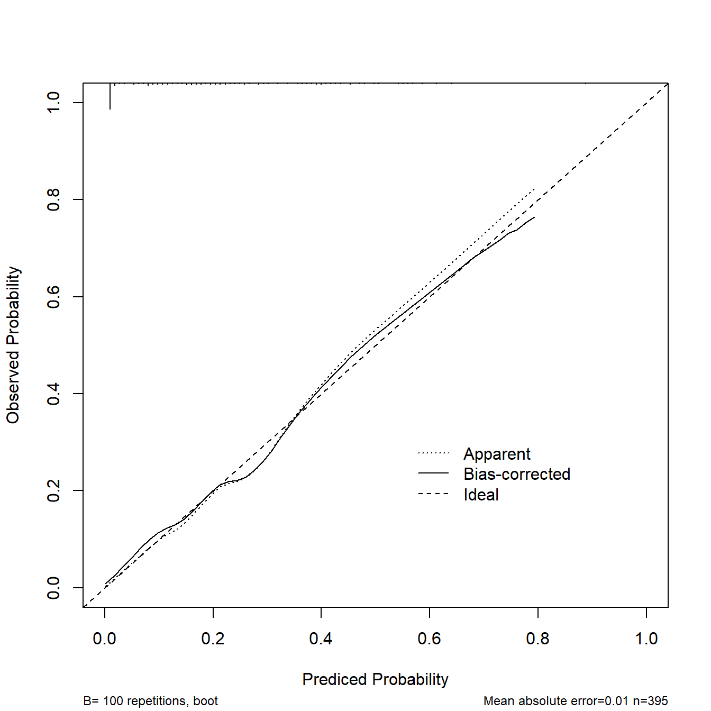
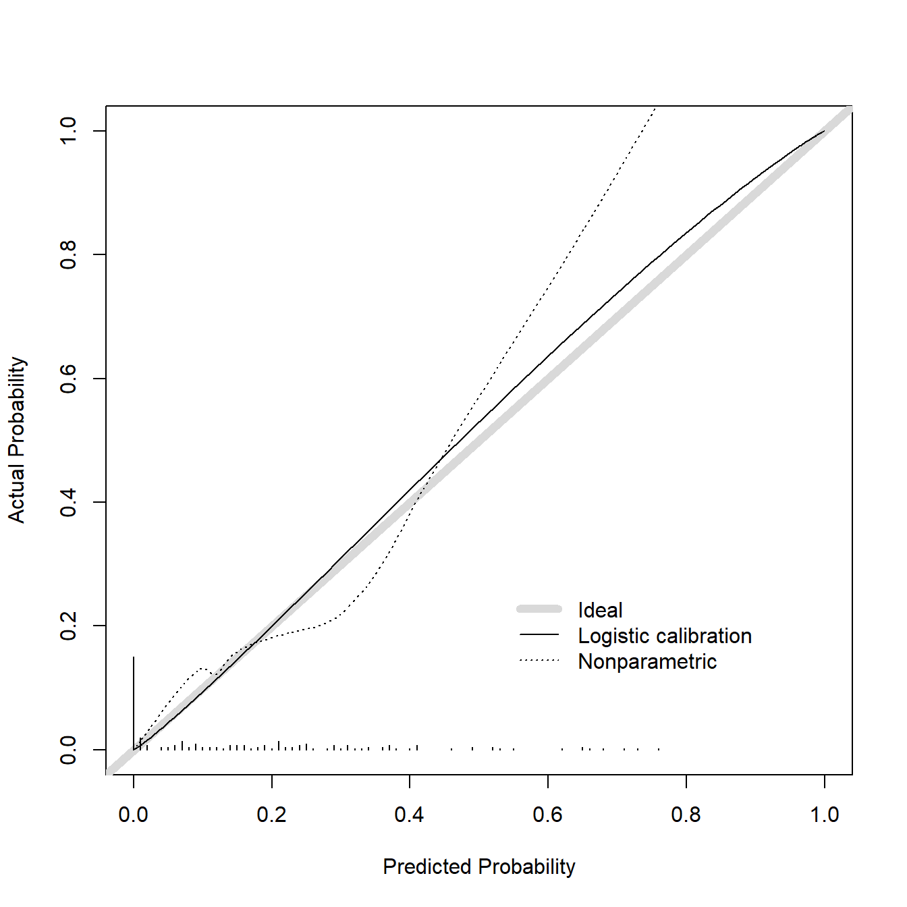
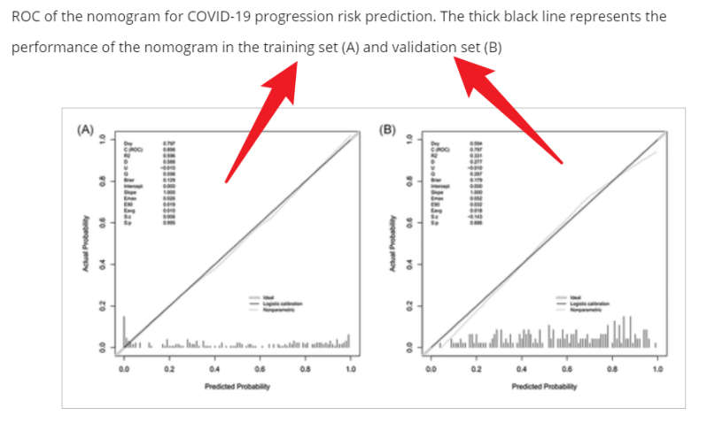
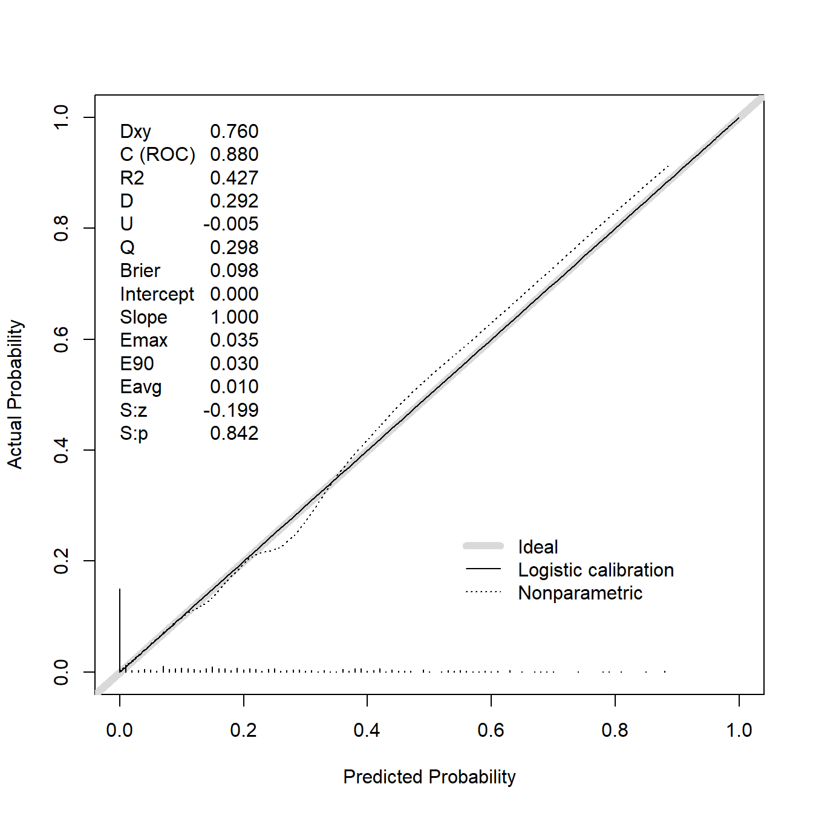
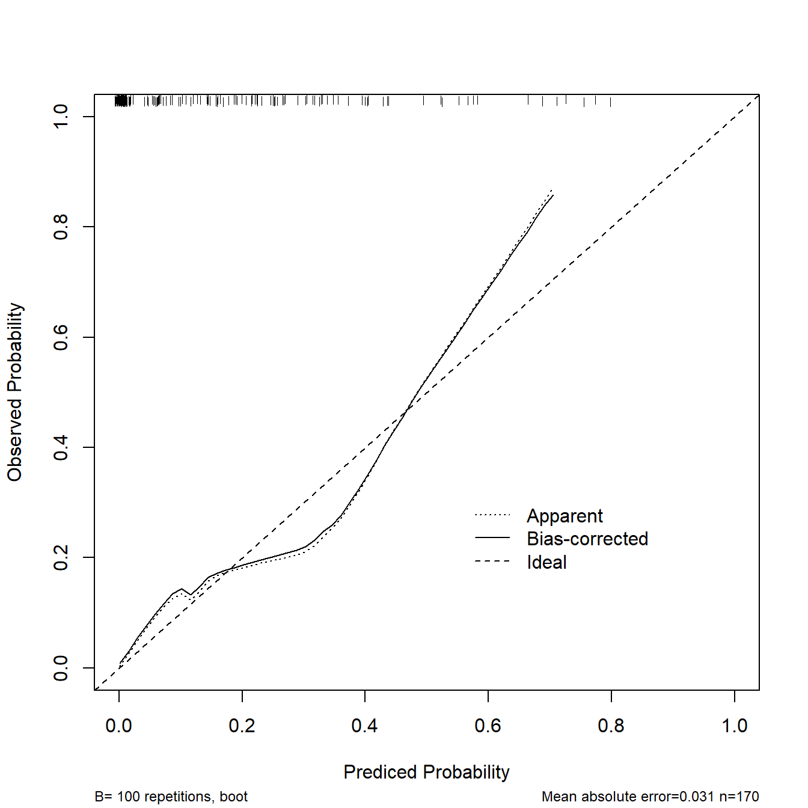
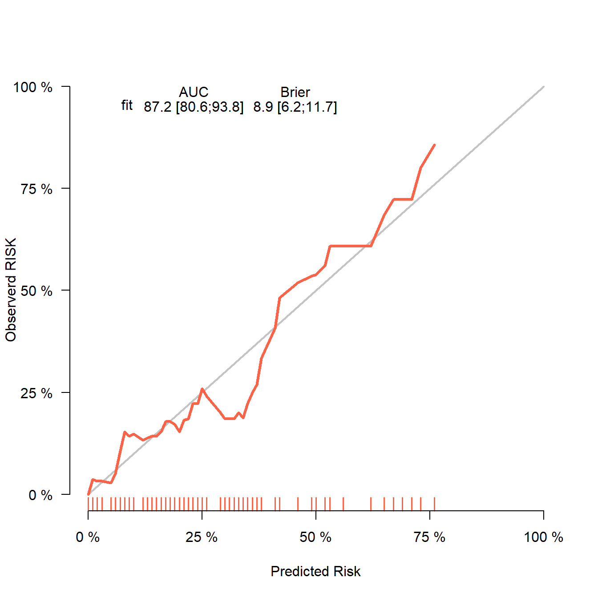
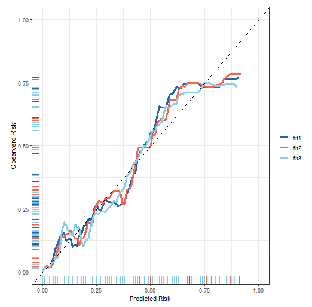

lowbirth <- read.csv("./datasets/lowbirth.csv")
lowbirth$black = ifelse(lowbirth$race == "black",1,0)
lowbirth$white = ifelse(lowbirth$race == "white",1,0)
lowbirth$other = ifelse(lowbirth$race %in% c("native American","oriental"),1,0)
lowbirth$delivery = factor(lowbirth$delivery)
lowbirth$sex <- factor(lowbirth$sex)
lowbirth$race <- NULL
str(lowbirth)
## 'data.frame': 565 obs. of 12 variables:
## $ birth : num 81.5 81.6 81.6 81.6 81.6 ...
## $ lowph : num 7.25 7.06 7.25 6.97 7.32 ...
## $ pltct : int 244 114 182 54 282 153 229 182 361 378 ...
## $ bwt : int 1370 620 1480 925 1255 1350 1310 1110 1180 970 ...
## $ delivery: Factor w/ 2 levels "abdominal","vaginal": 1 2 2 1 2 1 2 2 1 2 ...
## $ apg1 : int 7 1 8 5 9 4 6 6 6 2 ...
## $ vent : int 0 1 0 1 0 0 1 0 0 1 ...
## $ sex : Factor w/ 2 levels "female","male": 1 1 2 1 1 1 2 2 2 1 ...
## $ dead : int 0 1 0 1 0 0 0 0 0 1 ...
## $ black : num 0 1 1 1 1 1 0 1 0 0 ...
## $ white : num 1 0 0 0 0 0 1 0 1 1 ...
## $ other : num 0 0 0 0 0 0 0 0 0 0 ...32 logistic回归测试集校准曲线的绘制
今天给大家展示的是logistic回归测试集(或者叫验证集)的校准曲线如何实现(其实已经介绍过，不过没有单独说，有粉丝一直在后台问)。
32.1 准备数据
数据来自于这篇推文：logistic回归校准曲线的绘制，数据获取方法也在上面的推文中给出了。
32.2 数据分割
把数据随机划分为训练集、测试集，划分比例为7:3
set.seed(123)
ind <- sample(1:nrow(lowbirth),nrow(lowbirth)*0.7)
train_df <- lowbirth[ind,]
test_df <- lowbirth[- ind, ]32.3 训练集的校准曲线
在之前的推文中这种二分类资料训练集的校准曲线给大家介绍了非常多的方法：
这里我们直接使用rms包实现，已在上面的推文中详细介绍过了，这里就不多解释了。
library(rms)
## Loading required package: Hmisc
##
## Attaching package: 'Hmisc'
## The following objects are masked from 'package:base':
##
## format.pval, units
## Warning in .recacheSubclasses(def@className, def, env): undefined subclass
## "ndiMatrix" of class "replValueSp"; definition not updated
dd <- datadist(train_df)
options(datadist="dd")
fit1 <- lrm(dead ~ birth + lowph + pltct + bwt + vent + black + white,
data = train_df,x=T,y=T)
cal1 <- calibrate(fit1, method='boot', B=100)
plot(cal1,
xlim = c(0,1),
ylim = c(0,1),
xlab = "Prediced Probability",
ylab = "Observed Probability"
) 
##
## n=395 Mean absolute error=0.01 Mean squared error=0.00016
## 0.9 Quantile of absolute error=0.02132.4 测试集校准曲线方法1
测试集的校准曲线对于logistic回归很简单，任何可以计算概率的算法都可以轻松画出训练集、测试集的校准曲线，无非就是计算实际概率和预测概率而已。
二分类资料测试集的校准曲线在之前的推文中也做过很多次介绍，比如：
上面是3种实现方法，其实本质是一样的，前2种是手动计算，最后一种省去了自己计算的步骤，直接给你图形，并且完美继承yardstick的用法。
这里再给大家介绍3种方法，加上上面介绍的方法，logistic测试集的校准曲线一共给大家介绍了6种方法！
这个方法是基于rms包的。
# 首先获取测试集的预测结果
phat <- predict(fit1, test_df, type = 'fitted')
# 直接使用val.prob即可实现
val.prob(phat, test_df$dead,statloc = F,cex = 1)
## Dxy C (ROC) R2 D D:Chi-sq D:p
## 0.74384874 0.87192437 0.42860880 0.28181902 48.90923309 NA
## U U:Chi-sq U:p Q Brier Intercept
## -0.01085663 0.15437207 0.92571762 0.29267565 0.08935692 0.12059928
## Slope Emax E90 Eavg S:z S:p
## 1.08566597 0.29112563 0.07879941 0.03183303 -0.54088957 0.58858370这个结果，你可以把它当做测试集的校准曲线用，但其实val.prob函数的真正作用是实现外部验证数据(external validation)的校准曲线，这一点在Harrell大神写的书：Regression Modeling Strategies 中写的很清楚，或者你可以看函数的帮助文档。
所以这个方法没有给你重抽样的选择，因为作者认为外部验证是对模型最后的检验，不需要重抽样。
你可能在文献看见过训练集和测试集的校准曲线都是上面那张图的样式，类似下面这张图展示的，训练集和测试集一样的图，实现方法也很简单。

# 获取训练集的预测结果
phat_train <- predict(fit1, train_df, type = 'fitted')
# 直接使用val.prob即可实现
val.prob(phat_train, train_df$dead,cex = 1)
## Dxy C (ROC) R2 D D:Chi-sq
## 7.595104e-01 8.797552e-01 4.274140e-01 2.924665e-01 1.165243e+02
## D:p U U:Chi-sq U:p Q
## NA -5.063291e-03 -8.526513e-14 1.000000e+00 2.975298e-01
## Brier Intercept Slope Emax E90
## 9.802204e-02 -8.039794e-10 1.000000e+00 3.476792e-02 3.030223e-02
## Eavg S:z S:p
## 1.012113e-02 -1.990865e-01 8.421951e-01上面这张图可以用作训练集的校准曲线。
32.5 测试集校准曲线方法2
如果你非要对测试集的校准曲线进行重抽样，其实也很简单(除了rms还有很多手段可实现)。
这里还是用rms包实现。
二分类资料的校准曲线就是计算下实际概率和预测概率就好了，基于这个原理，我们可以自己实现，方法如下：
# 首先也是获取测试集的预测值
phat <- predict(fit1, test_df)
test_df$phat <- phat # 添加到测试集中
# 以预测值为自变量，结果变量为因变量，在测试集中建立逻辑回归
fit2 <- lrm(dead ~ phat, data = test_df,x=T,y=T)
# 对这个逻辑回归画校准曲线即可
cal2 <- calibrate(fit2, method='boot', B=100)
plot(cal2,
xlim = c(0,1),
ylim = c(0,1),
xlab = "Prediced Probability",
ylab = "Observed Probability"
) 
##
## n=170 Mean absolute error=0.031 Mean squared error=0.00183
## 0.9 Quantile of absolute error=0.078这个图就是测试集的校准曲线，并且使用了bootstrap方法进行了重抽样。
可以看到其实两张图是一样的，唯一不同是我们手动实现的方法多了重抽样100次的矫正曲线，其余就都是一样的了！
32.6 测试集校准曲线方法3
使用riskRegression包。这是我推荐的方法，这个包真的好用！你可能还听说过另一个包：pec，riskRegression正是pec的升级版，目前大部分功能都已经转移到riskRegression了。
# 训练集建立模型
fit <- glm(dead ~ birth + lowph + pltct + bwt + vent + black + white,
data = train_df, family = binomial)
library(riskRegression)
## riskRegression version 2023.09.08
# 测试集的表现
score <- Score(list("fit"=fit),
formula = dead ~ 1,
data = test_df, # 这里选择测试集即可
metrics = c("auc","brier"),
summary = c("risks","IPA","riskQuantile","ibs"),
plots = "calibration",
null.model = T,
conf.int = T,
B = 100,
M = 50
)
# 画图即可
plotCalibration(score,col="tomato",
xlab = "Predicted Risk",
ylab = "Observerd RISK",
bars = F)
并且这个方法是可以返回数据自己用ggplot2美化的，详情参考二分类资料校准曲线的绘制，这里就不多介绍了。

logistic的校准曲线真的很简单，Cox回归测试集的校准曲下次再介绍。